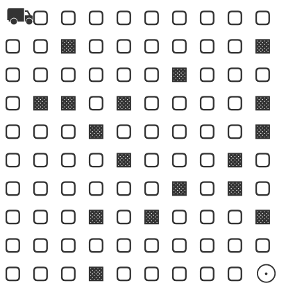

Reinforcement learning
- Machine learning with an agent that learns how to make decisions by taking actions in an environment to maximize some notion of cumulative reward
- The agent follows a policy (strategy) to decide which actions to take in different states
- Through trial and error, it learns which actions yield the highest rewards in specific situations
- Reinforcement learning is applied in domains including robotics, recommendation systems, and autonomous vehicles
Reinforcement learning
- Agent: The learner or decision-maker
- Environment: The world with which the agent interacts
- State: The current situation of the agent in the environment
- Action: What the agent can do in each state
- Reward: Feedback from the environment indicating the desirability of an action
Reinforcement learning
- RL involves training an agent that interacts with its environment
- The agent moves between different environmental states by taking actions
- These actions produce rewards (positive, negative, or zero)
- The agent’s goal is to maximize total rewards throughout an episode (a sequence from start to finish for the task)
- We define rewards based on what we want the agent to accomplish
Exploitation vs. Exploration
- Learning trade-off: explotation vs. exploration
- Exploitation – use the knowledge the agent already has is the best decision, meaning choose actions that have worked well in the past and are known to provide good rewards based on its current understanding
- Exploration – try new actions or strategies
Exploitation vs. Exploration
Too much exploitation (too greedy): The agent might get stuck using a suboptimal strategy because it never discovers better alternatives.
Too much exploration: The agent spends too much time trying random actions instead of using what it already knows works well.
Exploitation vs. Exploration – methods
- Some things are easy and provide instant gratification, others provide long term rewards
- Goal: optimize for maximum rewards over multiple episodes
- Training does not depend only on current state, but the whole history of states
Exploitation vs. Exploration – methods
- ε-greedy: Choose the best known action most of the time (exploitation), but occasionally (with probability ε) choose a random action (exploration)
- Softmax/Boltzmann exploration: Choose actions with probability relative to their estimated values
- Upper Confidence Bound (UCB): Select actions that have high potential value or high uncertainty
- Adding noise to the policy: Gradually reduce exploration over time as the agent learns
Q-learning
- Fundamental reinforcement learning algorithm
- The goal is to find the policy that can maximize the reward –find the optimal policy for each possible state
- The agent learns a Q-table, which maps states and actions to their expected rewards
- Q-table: matrix that estimates the expected future reward for each state-action pair
- The “Q” stands for “quality” - representing the quality or value of a specific action in a specific state.
Q-learning – steps
- Initialize the Q-table with zeros or random values
- For each episode:
- Start in some initial state
- Repeat until goal is reached:
- Choose an action (exploration or exploitation)
- Take the action, observe the reward and next state
- Update the Q-value for the current state-action pair
- Move to the next state
Delivery Truck
- Objective: move from one corner of a 2D grid (roads) to the other corner (delivery point)
- Environment: 2D grid, with blocked cells (obstacles)
- State: the cell in the grid the truck is on
- Actions: 4 in total – up, down, left, right
- Reward: positive reward for reaching the goal (delivery spot), negative reward for colliding with an obstacle, small positive reward for moving where there is no obstacle, positive reward for moving in the correct direction
Delivery Truck – initial state

Delivery Truck – initial state
Cart-pole balancing problem
You are trying to keep a pole standing up straight. The pole is connected to a cart with a joint that can move freely (no motor). The cart slides along a smooth track with no friction. At the start, the pole is standing straight up. The goal is to stop it from falling over by making the cart go left and right, faster or slower.
Cart-pole balancing problem
- Objective: keep a pole upright on a cart by applying forces to the cart
- Environment: The pole is attached to a cart that moves along a frictionless track
- State: the cart’s position and velocity, and the pole’s angle and angular velocity
- Actions: move the cart either left or right
- Reward: pole remains upright
The episode ends when the pole falls too far or the cart moves too far from the center
RF with gymnasium
You need c++ installed in your computer – for macs, install Xcode; for windows machines use VS code
https://gymnasium.farama.org/
/path/to/bin/python3 -m pip install gymnasium
/path/to/bin/python3 -m pip install "gymnasium[box2d]"
/path/to/bin/python3 -m pip install swig
cart-pole problem
Q-learning
- Define dimensions for the Q-table
- Fit the observation space into the Q-table
- Index for Q-Table is integer, define a tranformation from observation to index
- Initialize Q-Table – zeros or random number?